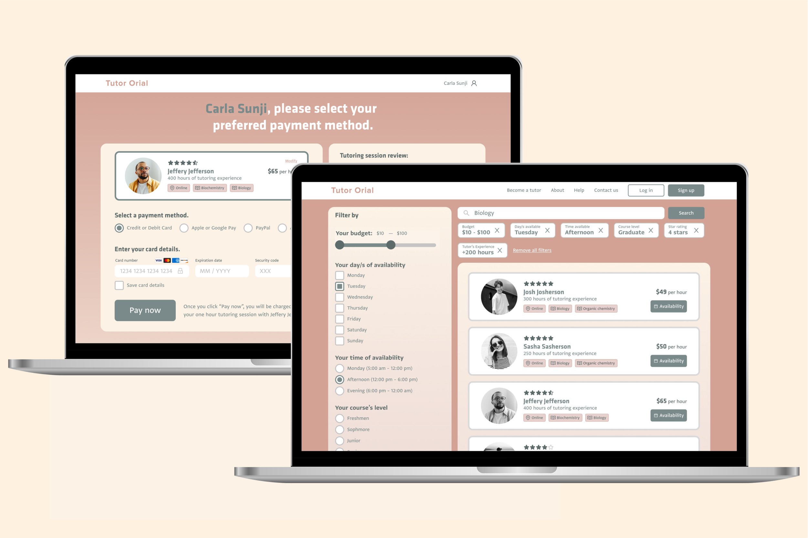

Tutor Orial
01 — Project Context
Tutor Orial is an online service where students search for friendly tutors. They launched their website but received a lot of complaints and bad reviews accompanied by poor conversion rates.
02 — Discovery
03 — Low Fidelity

In Prototype A, the user answers guided questions and is then matched with a tutor. Account creation comes after scheduling.
In Prototype B, the user can refine their search through filters. Account creation comes before scheduling.
04 — Usability testing takeaways
"I want to filter tutors to be in control of tutor options." —User 2 on Prototype A
"Likes the filtering options because student has more clarity on how they can search based on their budget and subject." —User 3 on Prototype B
"Expected to get tutor results." —User 1 on Prototype A
"Upon clicking search, didn’t expect to get a questionnaire because it’s not what she wanted." —User 4 on Prototype A
"Wish there is a way to skip through questionnaire." —User 1 on Prototype A

"Would have preferred to see tutor availability on tutor matches." —User 1 on Prototype A
"Prefers to see schedule before clicking “Book”." —User 1 on Prototype B
"Prefers seeing time options before booking at least as a filter for the sake of matching with her availability." —User 2 on Prototype A
"Wants to see calendar on tutor profile so that it caters to the users’ time and wouldn’t have to search multiple for tutors with available hours." —User 1 on Prototype B

05 — High Fidelity
Design System and Variants

Final Prototype